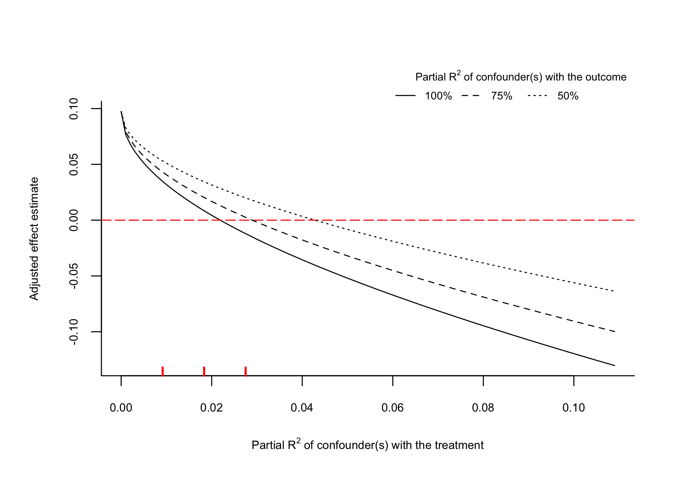

sensemakr implements a suite of sensitivity analysis tools that extends the traditional omitted variable bias framework and makes it easier to understand the impact of omitted variables in regression models, as discussed in Cinelli, C. and Hazlett, C. (2020) “Making Sense of Sensitivity: Extending Omitted Variable Bias.” Journal of the Royal Statistical Society, Series B (Statistical Methodology).
News
Watch the useR! 2020 presentation for a quick introduction on sensemakr.
Check out the software paper preprint!
Check out the Stata version of the package!
Check out the Python version of the package!
Check out the Robustness Value Shiny App at: https://carloscinelli.shinyapps.io/robustness_value/
Check out the package website!
Details
For theoretical details, please see the JRSS-B paper.
For a practical introduction, please see the software paper or see the package vignettes.
For a quick start, watch the 15 min tutorial on sensitivity analysis using sensemakr prepared for useR! 2020:
Development version
To install the development version on GitHub make sure you have the package devtools installed.
# install.packages("devtools")
devtools::install_github("carloscinelli/sensemakr")Basic usage
# loads package
library(sensemakr)
#> See details in:
#> Carlos Cinelli and Chad Hazlett (2020). Making Sense of Sensitivity: Extending Omitted Variable Bias. Journal of the Royal Statistical Society, Series B (Statistical Methodology).
# loads dataset
data("darfur")
# runs regression model
model <- lm(peacefactor ~ directlyharmed + age + farmer_dar + herder_dar +
pastvoted + hhsize_darfur + female + village, data = darfur)
# runs sensemakr for sensitivity analysis
sensitivity <- sensemakr(model = model,
treatment = "directlyharmed",
benchmark_covariates = "female",
kd = 1:3)
# short description of results
sensitivity
#> Sensitivity Analysis to Unobserved Confounding
#>
#> Model Formula: peacefactor ~ directlyharmed + age + farmer_dar + herder_dar +
#> pastvoted + hhsize_darfur + female + village
#>
#> Null hypothesis: q = 1 and reduce = TRUE
#>
#> Observed Estimates of ' directlyharmed ':
#> Coef. estimate: 0.09732
#> Standard Error: 0.02326
#> t-value: 4.18445
#>
#> Sensitivity Statistics:
#> Partial R2 of treatment with outcome: 0.02187
#> Robustness Value, q = 1 : 0.13878
#> Robustness Value, q = 1 alpha = 0.05 : 0.07626
#>
#> For more information, check summary.
# long description of results
summary(sensitivity)
#> Sensitivity Analysis to Unobserved Confounding
#>
#> Model Formula: peacefactor ~ directlyharmed + age + farmer_dar + herder_dar +
#> pastvoted + hhsize_darfur + female + village
#>
#> Null hypothesis: q = 1 and reduce = TRUE
#> -- This means we are considering biases that reduce the absolute value of the current estimate.
#> -- The null hypothesis deemed problematic is H0:tau = 0
#>
#> Observed Estimates of 'directlyharmed':
#> Coef. estimate: 0.0973
#> Standard Error: 0.0233
#> t-value (H0:tau = 0): 4.1844
#>
#> Sensitivity Statistics:
#> Partial R2 of treatment with outcome: 0.0219
#> Robustness Value, q = 1: 0.1388
#> Robustness Value, q = 1, alpha = 0.05: 0.0763
#>
#> Verbal interpretation of sensitivity statistics:
#>
#> -- Partial R2 of the treatment with the outcome: an extreme confounder (orthogonal to the covariates) that explains 100% of the residual variance of the outcome, would need to explain at least 2.19% of the residual variance of the treatment to fully account for the observed estimated effect.
#>
#> -- Robustness Value, q = 1: unobserved confounders (orthogonal to the covariates) that explain more than 13.88% of the residual variance of both the treatment and the outcome are strong enough to bring the point estimate to 0 (a bias of 100% of the original estimate). Conversely, unobserved confounders that do not explain more than 13.88% of the residual variance of both the treatment and the outcome are not strong enough to bring the point estimate to 0.
#>
#> -- Robustness Value, q = 1, alpha = 0.05: unobserved confounders (orthogonal to the covariates) that explain more than 7.63% of the residual variance of both the treatment and the outcome are strong enough to bring the estimate to a range where it is no longer 'statistically different' from 0 (a bias of 100% of the original estimate), at the significance level of alpha = 0.05. Conversely, unobserved confounders that do not explain more than 7.63% of the residual variance of both the treatment and the outcome are not strong enough to bring the estimate to a range where it is no longer 'statistically different' from 0, at the significance level of alpha = 0.05.
#>
#> Bounds on omitted variable bias:
#>
#> --The table below shows the maximum strength of unobserved confounders with association with the treatment and the outcome bounded by a multiple of the observed explanatory power of the chosen benchmark covariate(s).
#>
#> Bound Label R2dz.x R2yz.dx Treatment Adjusted Estimate Adjusted Se
#> 1x female 0.0092 0.1246 directlyharmed 0.0752 0.0219
#> 2x female 0.0183 0.2493 directlyharmed 0.0529 0.0204
#> 3x female 0.0275 0.3741 directlyharmed 0.0304 0.0187
#> Adjusted T Adjusted Lower CI Adjusted Upper CI
#> 3.4389 0.0323 0.1182
#> 2.6002 0.0130 0.0929
#> 1.6281 -0.0063 0.0670
# plot bias contour of point estimate
plot(sensitivity)
# plot bias contour of t-value
plot(sensitivity, sensitivity.of = "t-value")
# plot bias contour of lower limit of confidence interval
plot(sensitivity, sensitivity.of = "lwr")
# plot extreme scenario
plot(sensitivity, type = "extreme")
# latex code for sensitivity table
ovb_minimal_reporting(sensitivity)
#> \begin{table}[!h]
#> \centering
#> \begin{tabular}{lrrrrrr}
#> \multicolumn{7}{c}{Outcome: \textit{peacefactor}} \\
#> \hline \hline
#> Treatment: & Est. & S.E. & t-value & $R^2_{Y \sim D |{\bf X}}$ & $RV_{q = 1}$ & $RV_{q = 1, \alpha = 0.05}$ \\
#> \hline
#> \textit{directlyharmed} & 0.097 & 0.023 & 4.184 & 2.2\% & 13.9\% & 7.6\% \\
#> \hline
#> df = 783 & & \multicolumn{5}{r}{ \small \textit{Bound (1x female)}: $R^2_{Y\sim Z| {\bf X}, D}$ = 12.5\%, $R^2_{D\sim Z| {\bf X} }$ = 0.9\%} \\
#> \end{tabular}
#> \end{table}
# html code for sensitivity table
ovb_minimal_reporting(sensitivity, format = "pure_html")| Outcome: peacefactor | ||||||
|---|---|---|---|---|---|---|
| Treatment | Est. | S.E. | t-value | R2Y~D|X | RVq = 1 | RVq = 1, α = 0.05 |
| directlyharmed | 0.097 | 0.023 | 4.184 | 2.2% | 13.9% | 7.6% |
| Note: df = 783; Bound ( 1x female ): R2Y~Z|X,D = 12.5%, R2D~Z|X = 0.9% | ||||||